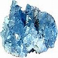

Convencional: arsenal terapêutico da odontologia moderna & novas abordagens
Enquanto que pontes, amálgamas de mercúrio & outras obturações, tratamento de canal e mais “bênçãos” do tratamento dentário lucrativo e convencional (e seu possível efeito grave à sua saúde) ilustram o lado “negro” da odontologia, as novas abordagens (tal como o renascimento de dentes!) que também serão discutidas nessa seção, iluminam um lado mais brilhante.
Seção “Convencional” do sítio-web CuraDente

As desvantagens da odontologia convencional: introdução & visão global
Geralmente a odontologia constitui uma abordagem cirúrgica sintomática, ao invés de fundada na causa-raiz, prejudica os dentes, contribui para doenças crônicas & degenerativas, as toxinas dentárias prejudicam a saúde & meio ambiente (mercúrio solto no ar).

"Dez dentistas - dez diagnósticos": Estudos sobre diagnósticos´falhos ou a qualidade, honestidade & reprodutibilidade dos planos de tratamento dos dentistas
Informação vital sobre diagnósticos errados e a confiança em dentistas
Aprofundamento da investigação sobre a honestidade e qualidade dos planos de tratamento dos dentistas
O plano de tratamento do seu dentista...honesto e duplicável ou influenciado por interesses financeiros? 50 dentistas avaliam o mesmo paciente...
Obturações dentárias: potenciais bombas-relógio tóxicas
Sobre os perigos à saúde das obturações e restaurações: "Todos os materiais odontológicos são potencialmente tóxicos, com uma vasta gama de reações individuais” e "os dentes com obturações frequentemente enfraquecem”...

Tratamento de canal de raiz dentária: sobre potenciais perigos à saúde
Link entre tratamentos endodônticos e doenças degenerativas. Sobre a neutralização de infecções bacterianas em canais radiculares.

Pontes e coroas dentárias: „coroação“ da glória odontológica
Sobre riscos específicos e efeitos colaterais da colocação de pontes e coroas
Experiências pessoais & testemunhos: “histórias de horror” da odontologia
Exemplos de como dentes, gengivas ou a saúde geral foram prejudicados por tratamento dentário invasivo e tóxico e/ou cuidados dentários aprovados convencionalmente.
Riscos diversos à saúde relacionados às práticas da odontologia convencional
Graves efeitos colaterais adicionais do tratamento dentário „corriqueiro“, como maior risco de câncer da tireóide.
Clorexidina: poderoso bactericida e enxaguatório bucal convencional para uso ocasional e emergencial
Um valioso acréscimo oriundo do arsenal dentário ortodoxo

Dicas de como encontrar um bom dentista - se você (crê) que precisa de um